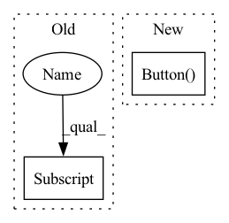

Pattern ID :40857
Before Change
self.stereo_methods_output = {}
for name in self.stereo_methods.keys():
self.stereo_methods_output[name] = MethodOutput(
disparity_pixels=None,
computation_time=np.nan,
point_cloud = o3d.t.geometry.PointCloud()After Change
self._settings_panel.add_child (self.last_runtime)
view_ctrls = gui.CollapsableVert("View controls", 0.25 * em, gui.Margins(em, 0, 0, 0))
reset_cam_button = gui.Button( "Reset Camera")
reset_cam_button.set_on_clicked(self._reset_camera)
view_ctrls.add_child(reset_cam_button)
self._show_axes = gui.Checkbox("Show axes")
self._show_axes.set_on_checked(self._on_show_axes)In pattern: SUPERPATTERN
Frequency: 3
Non-data size: 2
Instances Fragment ID: 115262538
Project Name: nburrus/stereodemo
Commit Name: 8033e945cd845f37132ff9b241c4b50c791b9bee
Time: 2022-05-16
Author: nicolas@burrus.name
File Name: stereodemo/visualizer.py
M Class Name: Visualizer
N Class Name: Visualizer
M Method Name: __init__(2)
N Method Name: __init__(2)
M Parent Class:
N Parent Class:
M File Name: stereodemo/visualizer.py
N File Name: stereodemo/visualizer.py
M Start Line: 51
M End Line: 93
N Start Line: 53
N End Line: 103
Before Change
size = round(12 * font_scale),
weight = "bold")
Stop_button = tk.Button(root)
Stop_button["bg"] = "//FF4433"
Stop_button["font"] = ft
Stop_button["fg"] = "/�"
Stop_button["justify"] = "center"After Change
Upsc_Butt_Style = ttk.Style()
Upsc_Butt_Style.configure("Bold.TButton", font = ft)
Stop_button = ttk.Button( root,
text = " STOP UPSCALE ",
image = stop_icon,
compound = tk.LEFT,
style = "Bold.TButton")
Stop_button.place(x = 40 + left_bar_width/2 - 310/2,
y = left_bar_height - 100,
width = 310, Fragment ID: 115262539
Project Name: djdefrag/qualityscaler
Commit Name: 66b6f13eca96c3a97a48871850754b01b7403ab2
Time: 2022-06-02
Author: jjluca96@gmail.com
File Name: QualityScaler.py
M Class Name: AnonimousClass
N Class Name: AnonimousClass
M Method Name: place_stop_button(0)
N Method Name: place_stop_button(0)
M Parent Class:
N Parent Class:
M File Name: QualityScaler.py
N File Name: QualityScaler.py
M Start Line: 1287
M End Line: 1298
N Start Line: 1354
N End Line: 1364
Before Change
size = round(12 * font_scale),
weight = "bold")
Upscale_button = tk.Button(root)
Upscale_button["bg"] = "/ቝaaed"
Upscale_button["font"] = ft
Upscale_button["fg"] = "/�"
Upscale_button["justify"] = "center"After Change
Upsc_Butt_Style = ttk.Style()
Upsc_Butt_Style.configure("Bold.TButton", font = ft)
Upscale_button = ttk.Button( root,
text = " UPSCALE",
image = play_icon,
compound = tk.LEFT,
style = "Bold.TButton")
Upscale_button.place(x = 40 + left_bar_width/2 - 310/2,
y = left_bar_height - 100,
width = 310, Fragment ID: 115262537
Project Name: djdefrag/qualityscaler
Commit Name: 66b6f13eca96c3a97a48871850754b01b7403ab2
Time: 2022-06-02
Author: jjluca96@gmail.com
File Name: QualityScaler.py
M Class Name: AnonimousClass
N Class Name: AnonimousClass
M Method Name: place_upscale_button(0)
N Method Name: place_upscale_button(0)
M Parent Class:
N Parent Class:
M File Name: QualityScaler.py
N File Name: QualityScaler.py
M Start Line: 1268
M End Line: 1280
N Start Line: 1331
N End Line: 1341